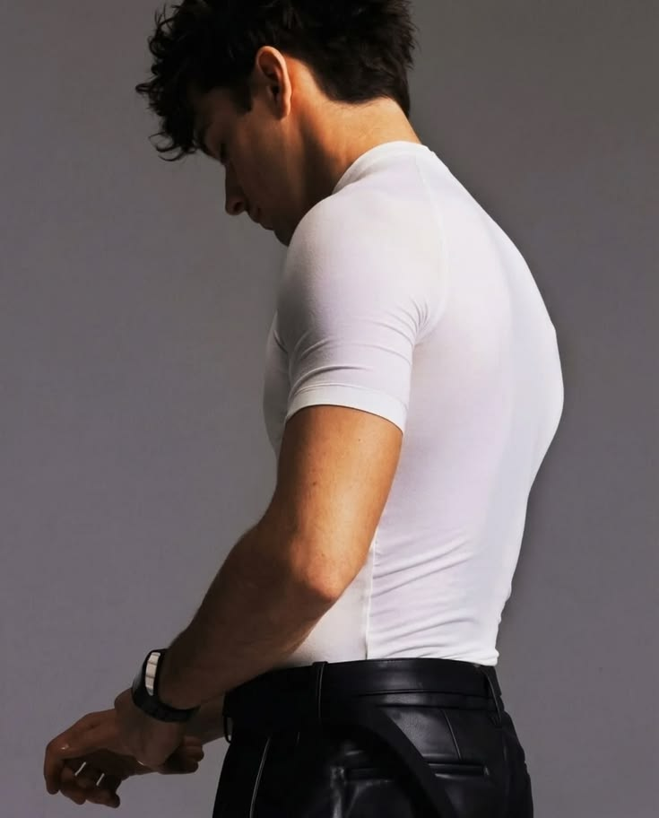
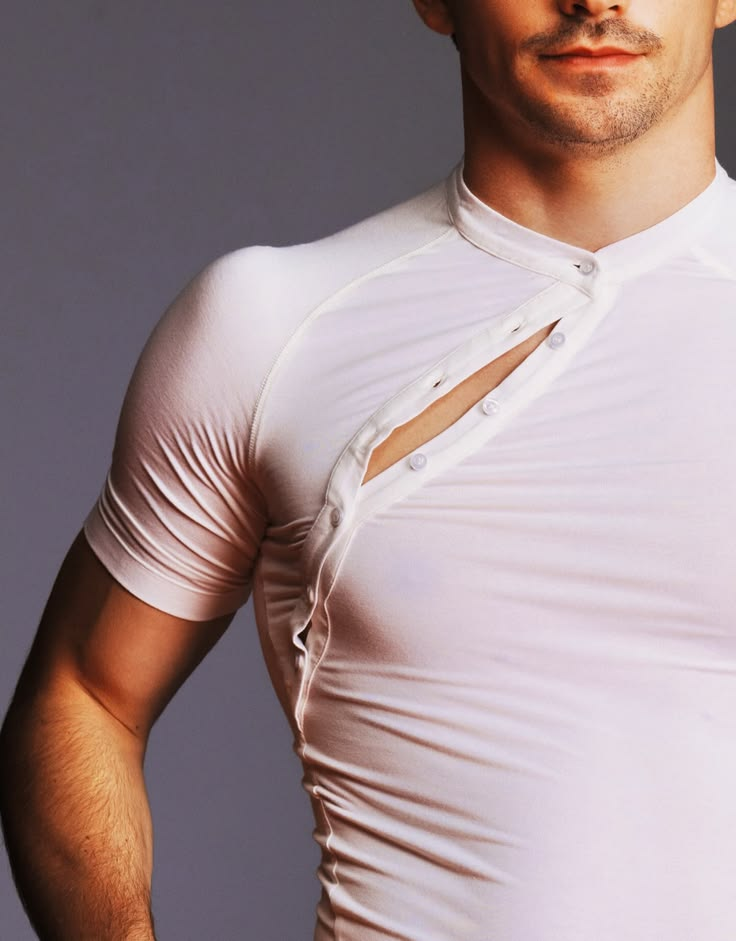
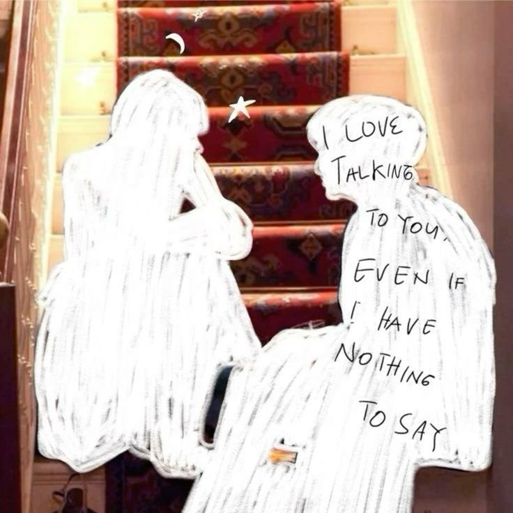

yang kadang tidak punya nama
Rasa
Pilih satu — dan biarkan kata menemukan jalannya sendiri.
Apa yang kamu rasakan?
sentuh salah satu
sentuh salah satu rasa di atas…
papan suasana
Mood board cinta ini



"Cinta yang tulus tidak perlu dramatis — ia datang pelan, diam-diam, lalu tiba-tiba sudah menjadi bagian dari napasmu."



terakhir